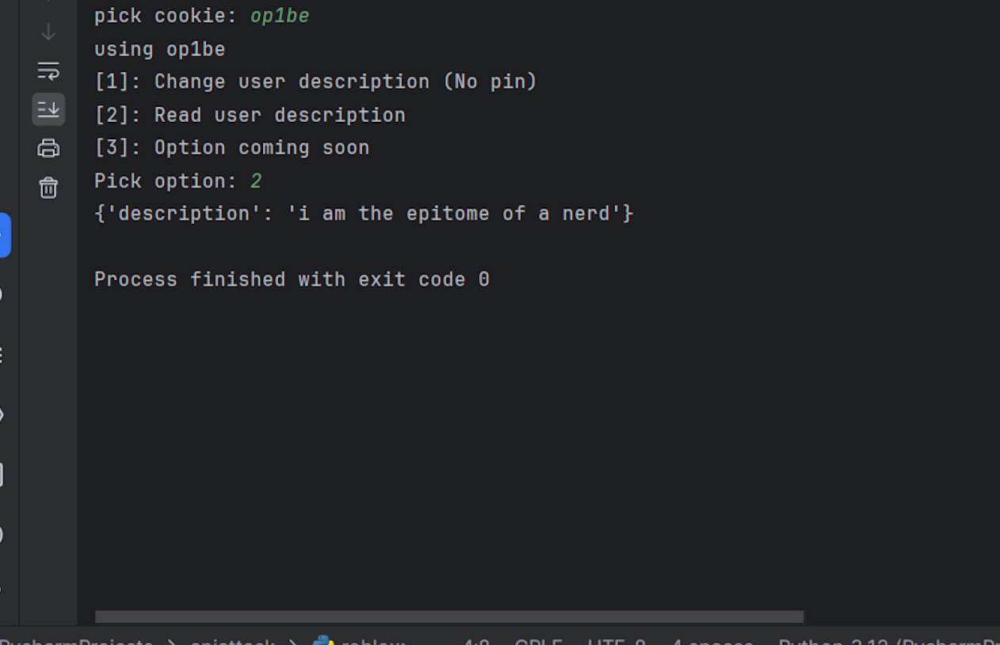

![[Image of code output along with rolimons website]](../images/apimanipulate.png)
About:
This was pretty much the first API project that I attempted to do something- originally I was content with just reading API information from the player character but then I decided that I wanted to make some sort of input with python and be able to choose between different player cookies (I have many accounts) and then also be able to choose whether to just read the information or to request a change from Roblox to change the decription of the character.
How it works:
The python asks which cookie to choose from and the user has to type out whichever they are attempting to use through the dotenv (I learned about dotenv from this project). / It then gathers some possibly needed information for changing description (not needed for reading I believe). / The python then asks 3 options- 1 for changing the users description, 2 for just reading it (printing to console), and the 3rd option was created to test the roblox api for purchases
Flaws:
To me this project was a success however it can't change the information of the account if I turn on safe mode (At least not without making many changes).
Learned:
This project taught me a lot about the Roblox api and how to use different parts for different things- along with verification and cookies.
Used:
- Python
- Pycharm
- Roblox API